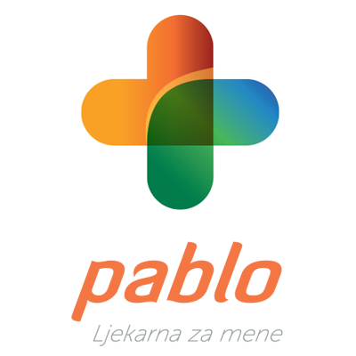
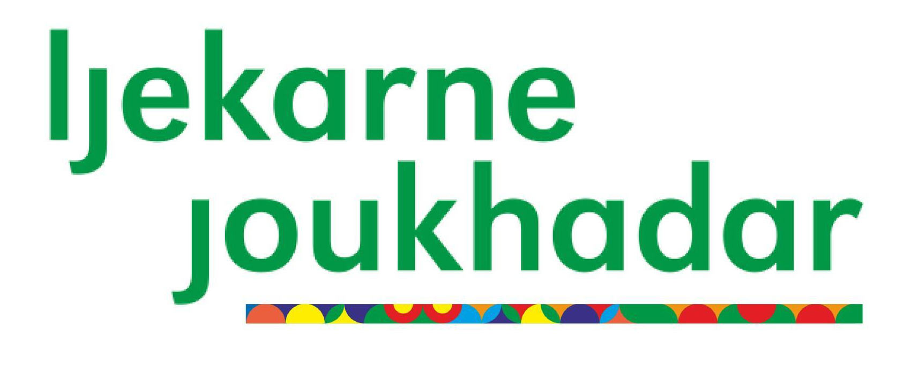
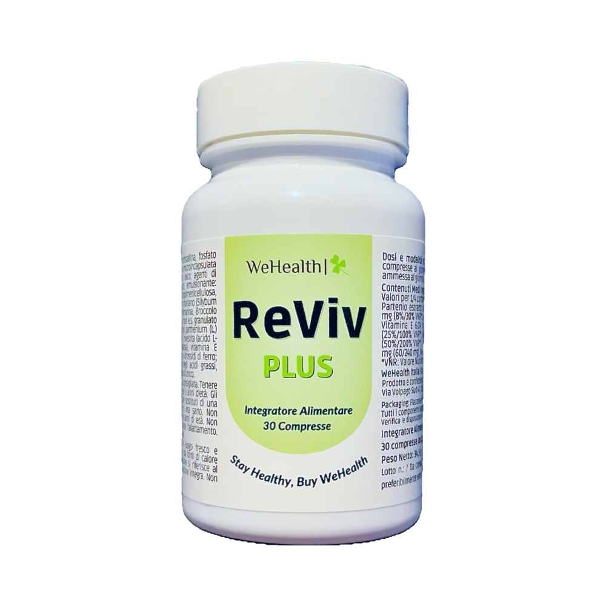
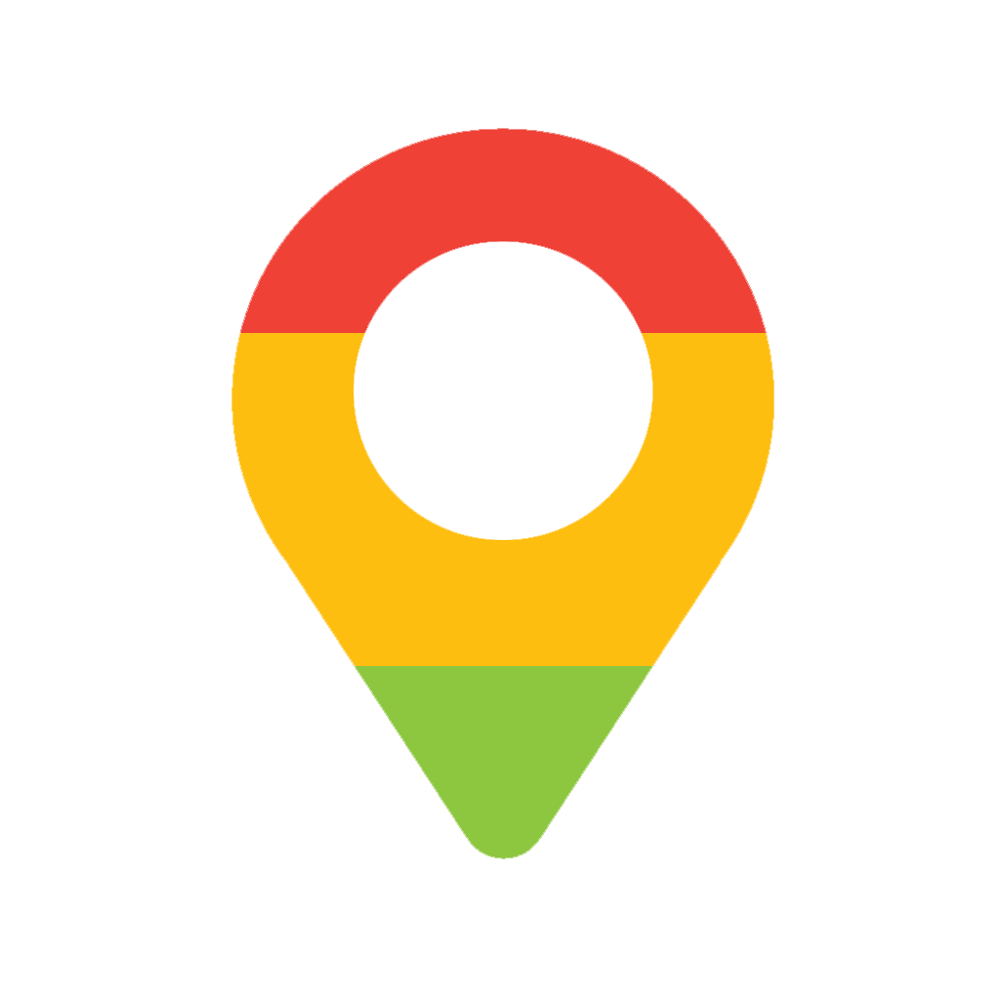

Kupi u Pablo ljekarni! Kupi u Pharmeria ljekarni!
Kupi u Joukhadar ljekarni!
ReViv PLUS, zahvaljujući svojoj naprednoj formuli sa sastojcima kao što su povratić (Tanacetum parthenium), magnezij, sikavica (Silybum marianum), Broccox® (ekstrakt Brassica Italica), vitamin C, niacin, vitamin E i N-acetil-L-cistein, djeluju sinergijski kako bi pružili učinkovito, brzo i dugotrajno olakšanje od pijanstva (poznatog kao mamurluk: dehidracija, elektrolitička ravnoteža i oksidativni stres).
Prisutnost aktivnih sastojaka kao što su Broccox® i N-acetil-L-cistein doprinosi zaštiti i optimalnom funkcioniranju jetre, istovremeno pružajući naprednu neuroprotektivnu potporu.
Povratić (Tanacetum/Chrisantenum parthenium):
Ovaj biljni ekstrakt pokazao je
protuupalna i
analgetska svojstva, koja su korisna u smanjenju glavobolje.
Magnezij:
Njegova uloga u opuštanju mišića i stabilizaciji raspoloženja
potkrijepljena je
istraživanjima, pridonoseći mirnijem i okrepljujućem snu.
Sikavica (Silybum marianum):
Poznat po svojoj učinkovitosti u podršci funkciji
jetre, neophodan je u procesu metabolizma alkohola.
Broccox® (ekstrakt brokule):
Pruža antioksidanse za neutralizaciju slobodnih
radikala tijekom spavanja.
Vitamini i cink:
Esencijalni elementi za jačanje imunološkog sustava, kože i
živčanog sustava, vitalni za oporavak nakon
alkohola.
Jedna tableta s punom čašom vode prije konzumiranja alkohola priprema vaš organizam, pruža antioksidanse i druge sastojke koji podržavaju rad jetre.
Uzmite preostalu tabletu nakon konzumacije alkohola s punom čašom vode kako bi ublažili posljedice koje se mogu pojaviti sljedeći dan.

Zagreb i okolica